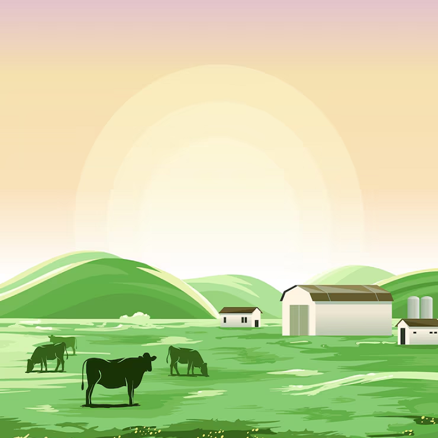

<app-header title="Inicio" [isMenuButton]="true"></app-header>
<ion-content>
  <ion-grid fixed class="home-grid">
    <ion-row>
      <ion-col size="12" size-md="4" size-lg="3">
        <ion-card class="home-card" button (click)="goToFarms()">
          

          <ion-card-header>
            <ion-card-title>Fincas</ion-card-title>
            <ion-card-subtitle>Registro de terrenos</ion-card-subtitle>
          </ion-card-header>
          <ion-card-content> Consulta y registra tus terrenos. </ion-card-content>
        </ion-card>
      </ion-col>
      <ion-col size="12" size-md="4" size-lg="3">
        <ion-card class="home-card" button (click)="goToBirths()">
          

          <ion-card-header>
            <ion-card-title>Nacimientos</ion-card-title>
            <ion-card-subtitle>Registro reproductivo</ion-card-subtitle>
          </ion-card-header>
          <ion-card-content>
            Consulta y registra nacimientos de animales.
          </ion-card-content>
        </ion-card>
      </ion-col>
      <ion-col size="12" size-md="4" size-lg="3">
        <ion-card class="home-card" button (click)="goToReports()">
          

          <ion-card-header>
            <ion-card-title>Reportes</ion-card-title>
            <ion-card-subtitle>Descarga tus reportes</ion-card-subtitle>
          </ion-card-header>
          <ion-card-content>
            Crea reportes para ver tus numeros.
          </ion-card-content>
        </ion-card>
      </ion-col>
    </ion-row>
  </ion-grid>
</ion-content>
